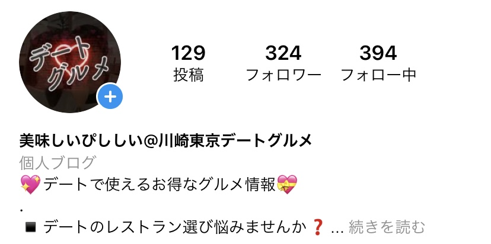
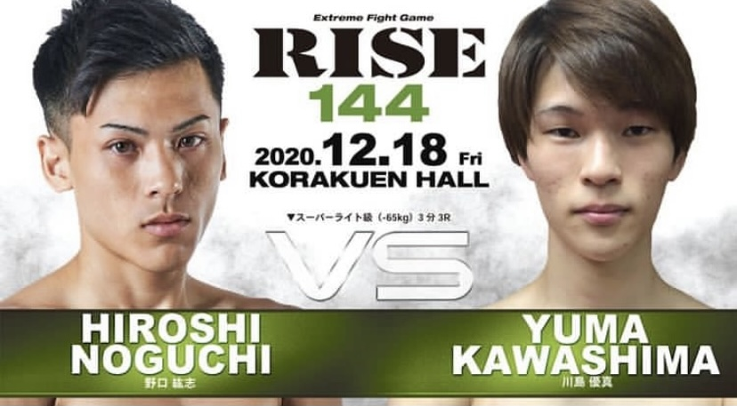
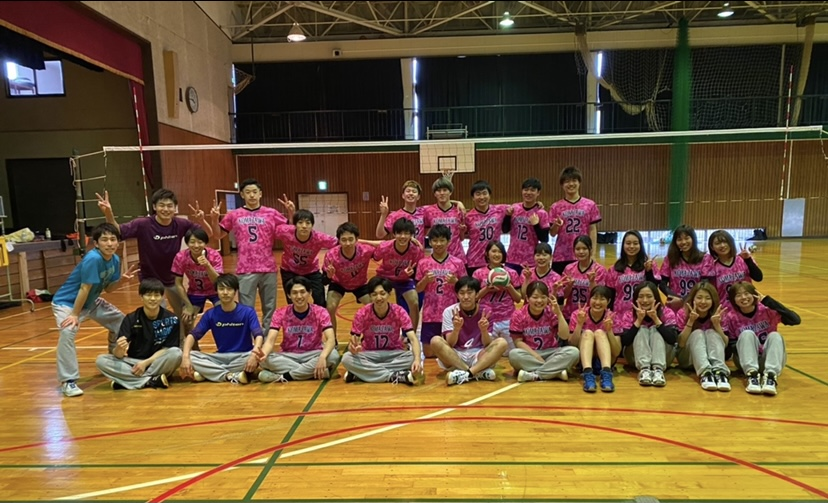

-

Instagram
インスタグラムでグルメ情報の配信を行っています。
毎投稿ごとのインサイトを分析し、投稿の方法を変えながら
試行錯誤した結果、まだまだ少ないですが6倍に増やす事ができました。 -

Kick Boxing
アマチュアの全国大会優勝を目標に練習に励みました。
学費を稼いでいたので、練習時間の確保と
自分に負けないという信念を曲げないことを意識して
やりきることができました。 -

Volleyball Circle Leader
バレーボールサークルの会長として尽力しました
キックボクシングに力を入れていましたが、その旨を伝えることで
同期のメンバーの協力を得て、100人というメンバーをまとめることができました。 「川島が会長でよかった」といってもらえてとても楽しい思い出ばかりでした。